Convolutional Neural Networks
Table of Contents
- Table of Contents
- Summary
- Foundations of CNNs
- Deep Convolutional Models: Case Studies
- Object Detection
- Special Applications: Face Recognition & Neural Style Transfer
- Extras
Summary
How to build convolutional neural networks and apply it to image data. Thanks to deep learning, computer vision is working far better than just two years ago, and this is enabling numerous exciting applications ranging from safe autonomous driving, to accurate face recognition, to automatic reading of radiology images.
- Understand how to build a convolutional neural network, including recent variations such as residual networks.
- Know how to apply convolutional networks to visual detection and recognition tasks.
- Know to use neural style transfer to generate art.
- Be able to apply these algorithms to a variety of image, video, and other 2D or 3D data.
Foundations of CNNs
Learn to implement the foundational layers of CNNs (pooling, convolutions) and to stack them properly in a deep network to solve multi-class image classification problems.
Computer Vision
- Computer vision is from the applications that are rapidly active thanks to deep learning.
- One of the applications of computer vision that are using deep learning includes:
- Self driving cars
- Face recognition
- Deep learning also is making new arts to be created to in computer vision as we will see.
- Rabid changes to computer vision are making new applications that weren't possible a few years ago.
- Computer vision deep leaning techniques are always evolving making a new architectures which can help us in other areas other than computer vision.
- For example, took some ideas of computer vision and applied it in speech recognition.
- Examples of a computer vision problems includes:
- Image classification
- Object detection
- Detect object and localize them
- Neural style transfer
- Changes the style of an image using another image
- On of the challenges of computer vision problem that images can be so large and we want a fast and accurate algorithm to work with that.
- For example, a
1000x1000image will represent 3 million feature/input to the full connected neural network. If the following hidden layer contains 1000, then we will want to learn weights of the shape[1000, 3 million]which is 3 billion parameter only in the first layer and thats so computationally expensive!
- For example, a
- On of the solutions is to build this using convolution layers instead of the fully connected layers.
Edge Detection Example
-
The convolution operation is one of the fundamentals blocks of a CNN. One of the examples about convolution is the image edge detection operation.
-
Early layers of CNN might detect edges then the middle layers will detect parts of objects and the later layers will put the these parts together to produce an output.
-
In an image we can detect vertical edges, horizontal edges, or full edge detector.
-
Vertical edge detection:
- An example of convolution operation to detect vertical edges:

- In the last example a
6x6matrix convolved with3x3filter/kernel gives us a4x4matrix. - If you make the convolution operation in TensorFlow you will find the function
tf.nn.conv2d. In keras you will findConv2dfunction. - The vertical edge detection filter will find a
3x3place in an image where there are a bright region followed by a dark region. - If we applied this filter to a white region followed by a dark region, it should find the edges in between the two colors as a positive value. But if we applied the same filter to a dark region followed by a white region it will give us negative values. To solve this we can use the abs function to make it positive.
- An example of convolution operation to detect vertical edges:
-
Horizontal edge detection
-
Filter would be like this
1 1 1 0 0 0 -1 -1 -1
-
-
There are a lot of ways we can put number inside the horizontal of vertical edge detections. For example here are the vertical Sobel filter (The idea is taking care of the middle row):
1 0 -1 2 0 -2 1 0 -1 -
Also something called Scharr filter (The idea is taking great care of the middle row):
3 0 -3 10 0 -10 3 0 -3 -
What we learned in the deep learning is that we don't need to hand craft these numbers, we can treat them as weights and then learn them. It can learn horizontal, vertical, angled, or any edge type automatically rather than getting them by hand.
Padding
-
In order to to use deep neural networks we really need to use paddings.
-
In the last section we saw that a
6x6matrix convolved with3x3filter/kernel gives us a4x4matrix. -
To give it a general rule, if a matrix
nxnis convolved withfxffilter/kernel give usn-f+1,n-f+1matrix. -
The convolution operation shrinks the matrix if f>1.
-
We want to apply convolution operation multiple times, but if the image shrinks we will lose a lot of data on this process. Also the edges pixels are used less than other pixels in an image.
-
So the problems with convolutions are:
- Shrinks output.
- throwing away a lot of information that are in the edges.
-
To solve these problems we can pad the input image before convolution by adding some rows and columns to it. We will call the padding amount
Pthe number of row/columns that we will insert in top, bottom, left and right of the image. -
In almost all the cases the padding values are zeros.
-
The general rule now, if a matrix
nxnis convolved withfxffilter/kernel and paddingpgive usn+2p-f+1,n+2p-f+1matrix. -
If n = 6, f = 3, and p = 1 Then the output image will have
n+2p-f+1 = 6+2-3+1 = 6. We maintain the size of the image. -
Same convolutions is a convolution with a pad so that output size is the same as the input size. Its given by the equation:
P = (f-1) / 2 -
In computer vision f is usually odd. Some of the reasons is that its have a center value.
Strided Convolution
-
Strided convolution is another piece that are used in CNNs.
-
We will call stride
S -
When we are making the convolution operation we used
Sto tell us the number of pixels we will jump when we are convolving filter/kernel. The last examples we described S was 1. -
Now the general rule are:
- if a matrix
nxnis convolved withfxffilter/kernel and paddingpand stridesit give us(n+2p-f)/s+1,(n+2p-f)/s+1matrix.
- if a matrix
-
In case
(n+2p-f)/s + 1is fraction we can take floor of this value. -
In math textbooks the conv operation is filpping the filter before using it. What we were doing is called cross-correlation operation but the state of art of deep learning is using this as conv operation.
-
Same convolutions is a convolution with a pad so that output size is the same as the input size. Its given by the equation:
p = (n*s - n + f - s) / 2 When s = 1 ==> P = (f-1) / 2
Convolutions Over Volumes
- We see how convolution works with 2D images, now lets see if we want to convolve 3D images (RGB image)
- We will convolve an image of height, width, # of channels with a filter of a height, width, same # of channels. Hint that the image number channels and the filter number of channels are the same.
- We can call this as stacked filters for each channel!
- Example:
- Input image:
6x6x3 - Filter:
3x3x3 - Result image:
4x4x1 - In the last result p=0, s=1
- Input image:
- Hint the output here is only 2D.
- We can use multiple filters to detect multiple features or edges. Example.
- Input image:
6x6x3 - 10 Filters:
3x3x3 - Result image:
4x4x10 - In the last result p=0, s=1
- Input image:
One Layer of a Convolutional Network
-
First we convolve some filters to a given input and then add a bias to each filter output and then get RELU of the result. Example:
- Input image:
6x6x3# a0 - 10 Filters:
3x3x3#W1 - Result image:
4x4x10#W1a0 - Add b (bias) with
10x1will get us :4x4x10image#W1a0 + b - Apply RELU will get us:
4x4x10image#A1 = RELU(W1a0 + b) - In the last result p=0, s=1
- Hint number of parameters here are:
(3x3x3x10) + 10 = 280
- Input image:
-
The last example forms a layer in the CNN.
-
Hint that no matter how the size of the input, the number of the parameters for the same filter will still the same. That makes it less prune to overfitting.
-
Here are some notations we will use. If layer l is a conv layer:
Hyperparameters f[l] = filter size p[l] = padding # Default is zero s[l] = stride nc[l] = number of filters Input: n[l-1] x n[l-1] x nc[l-1] Or nH[l-1] x nW[l-1] x nc[l-1] Output: n[l] x n[l] x nc[l] Or nH[l] x nW[l] x nc[l] Where n[l] = (n[l-1] + 2p[l] - f[l] / s[l]) + 1 Each filter is: f[l] x f[l] x nc[l-1] Activations: a[l] is nH[l] x nW[l] x nc[l] A[l] is m x nH[l] x nW[l] x nc[l] # In batch or minbatch training Weights: f[l] * f[l] * nc[l-1] * nc[l] bias: (1, 1, 1, nc[l])
A Simple Convolution Network Example
- Lets build a big example.
- Input Image are:
a0 = 39x39x3n0 = 39andnc0 = 3
- First layer (Conv layer):
f1 = 3,s1 = 1, andp1 = 0number of filters = 10- Then output are
a1 = 37x37x10n1 = 37andnc1 = 10
- Second layer (Conv layer):
f2 = 5,s2 = 2,p2 = 0number of filters = 20- The output are
a2 = 17x17x20n2 = 17,nc2 = 20
- Hint shrinking goes much faster because the stride is 2
- Third layer (Conv layer):
f3 = 5,s3 = 2,p2 = 0number of filters = 40- The output are
a3 = 7x7x40n3 = 7,nc3 = 40
- Forth layer (Fully connected Softmax)
a3 = 7x7x40 = 1960as a vector..
- Input Image are:
- In the last example you seen that the image are getting smaller after each layer and thats the trend now.
- Types of layer in a convolutional network:
- Convolution.
#Conv - Pooling
#Pool - Fully connected
#FC
- Convolution.
Pooling Layers
- Other than the conv layers, CNNs often uses pooling layers to reduce the size of the inputs, speed up computation, and to make some of the features it detects more robust.
- Max pooling example:

- This example has
f = 2,s = 2, andp = 0hyperparameters
- This example has
- The max pooling is saying, if the feature is detected anywhere in this filter then keep a high number. But the main reason why people are using pooling because its works well in practice and reduce computations.
- Max pooling has no parameters to learn.
- Example of Max pooling on 3D input:
- Input:
4x4x10 Max pooling size = 2andstride = 2- Output:
2x2x10
- Input:
- Average pooling is taking the averages of the values instead of taking the max values.
- Max pooling is used more often than average pooling in practice.
- If stride of pooling equals the size, it will then apply the effect of shrinking.
- Hyperparameters summary
- f : filter size.
- s : stride.
- Padding are rarely uses here.
- Max or average pooling.
Convolutional Neural Network Example
- Now we will deal with a full CNN example. This example is something like the LeNet-5 that was invented by Yann Lecun.
- Input Image are:
a0 = 32x32x3n0 = 32andnc0 = 3
- First layer (Conv layer):
#Conv1f1 = 5,s1 = 1, andp1 = 0number of filters = 6- Then output are
a1 = 28x28x6n1 = 28andnc1 = 6
- Then apply (Max pooling):
#Pool1f1p = 2, ands1p = 2- The output are
a1 = 14x14x6
- Second layer (Conv layer):
#Conv2f2 = 5,s2 = 1,p2 = 0number of filters = 16- The output are
a2 = 10x10x16n2 = 10,nc2 = 16
- Then apply (Max pooling):
#Pool2f1p = 2, ands1p = 2- The output are
a2 = 5x5x16
- Third layer (Fully connected)
#FC3- Number of neurons are 120
- The output
a3 = 120 x 1. 400 came from5x5x16
- Forth layer (Fully connected)
#FC4- Number of neurons are 84
- The output
a4 = 84 x 1.
- Fifth layer (Softmax)
- Number of neurons is 10 if we need to identify for example the 10 digits.
- Input Image are:
- Hint a Conv1 and Pool1 is treated as one layer.
- Some statistics about the last example: 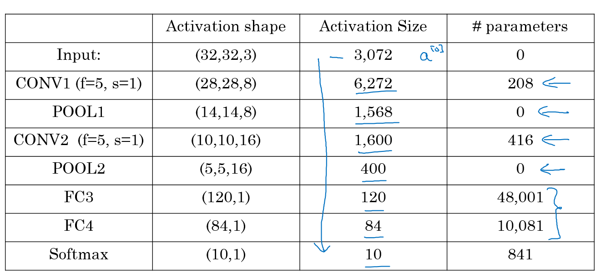
- Hyperparameters are a lot. For choosing the value of each you should follow the guideline that we will discuss later or check the literature and takes some ideas and numbers from it.
- Usually the input size decreases over layers while the number of filters increases.
- A CNN usually consists of one or more convolution (Not just one as the shown examples) followed by a pooling.
- Fully connected layers has the most parameters in the network.
- To consider using these blocks together you should look at other working examples firsts to get some intuitions.
Why Convolutions?
- Two main advantages of Convs are:
- Parameter sharing.
- A feature detector (such as a vertical edge detector) that's useful in one part of the image is probably useful in another part of the image.
- sparsity of connections.
- In each layer, each output value depends only on a small number of inputs which makes it translation invariance.
- Parameter sharing.
- Putting it all together:

Deep Convolutional Models: Case Studies
Learn about the practical tricks and methods used in deep CNNs straight from the research papers.
Why Look at Case Studies?
- We learned about Conv layer, pooling layer, and fully connected layers. It turns out that computer vision researchers spent the past few years on how to put these layers together.
- To get some intuitions you have to see the examples that has been made.
- Some neural networks architecture that works well in some tasks can also work well in other tasks.
- Here are some classical CNN networks:
- LeNet-5
- AlexNet
- VGG
- The best CNN architecture that won the last ImageNet competition is called ResNet and it has 152 layers!
- There are also an architecture called Inception that was made by Google that are very useful to learn and apply to your tasks.
- Reading and trying the mentioned models can boost you and give you a lot of ideas to solve your task.
Classic Networks
-
In this section we will talk about classic networks which are LeNet-5, AlexNet, and VGG.
-
LeNet-5
- The goal for this model was to identify handwritten digits in a
32x32x1gray image. Here are the drawing of it: 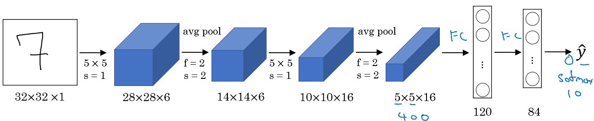 - This model was published in 1998. The last layer wasn't using softmax back then.
- It has 60k parameters.
- The dimensions of the image decreases as the number of channels increases.
Conv ==> Pool ==> Conv ==> Pool ==> FC ==> FC ==> softmaxthis type of arrangement is quite common.- The activation function used in the paper was Sigmoid and Tanh. Modern implementation uses RELU in most of the cases.
- [LeCun et al., 1998. Gradient-based learning applied to document recognition]
- The goal for this model was to identify handwritten digits in a
-
AlexNet
-
Named after Alex Krizhevsky who was the first author of this paper. The other authors includes Jeoffery Hinton.
-
The goal for the model was the ImageNet challenge which classifies images into 1000 classes. Here are the drawing of the model:

-
Summary:
Conv => Max-pool => Conv => Max-pool => Conv => Conv => Conv => Max-pool ==> Flatten ==> FC ==> FC ==> Softmax -
Similar to LeNet-5 but bigger.
-
Has 60 Million parameter compared to 60k parameter of LeNet-5.
-
It used the RELU activation function.
-
The original paper contains Multiple GPUs and Local Response normalization (RN).
- Multiple GPUs was used because the GPUs was so fast back then.
- Researchers proved that Local Response normalization doesn't help much so for now don't bother yourself for understanding or implementing it.
-
This paper convinced the computer vision researchers that deep learning is so important.
-
[Krizhevsky et al., 2012. ImageNet classification with deep convolutional neural networks]
-
-
VGG-16
- A modification for AlexNet.
- Instead of having a lot of hyperparameters lets have some simpler network.
- Focus on having only these blocks:
- CONV = 3 X 3 filter, s = 1, same
- MAX-POOL = 2 X 2 , s = 2
- Here are the architecture:

- This network is large even by modern standards. It has around 138 million parameters.
- Most of the parameters are in the fully connected layers.
- It has a total memory of 96MB per image for only forward propagation!
- Most memory are in the earlier layers.
- Number of filters increases from 64 to 128 to 256 to 512. 512 was made twice.
- Pooling was the only one who is responsible for shrinking the dimensions.
- There are another version called VGG-19 which is a bigger version. But most people uses the VGG-16 instead of the VGG-19 because it does the same.
- VGG paper is attractive it tries to make some rules regarding using CNNs.
- [Simonyan & Zisserman 2015. Very deep convolutional networks for large-scale image recognition]
Residual Networks (ResNets)
- Very, very deep NNs are difficult to train because of vanishing and exploding gradients problems.
- In this section we will learn about skip connection which makes you take the activation from one layer and suddenly feed it to another layer even much deeper in NN which allows you to train large NNs even with layers greater than 100.
- Residual Block
- ResNets are built out of some Residual blocks.

- They add a shortcut/skip connection before the second activation.
- The authors of this block find that you can train a deeper NNs using stacking this block.
- [He et al., 2015. Deep residual networks for image recognition]
- ResNets are built out of some Residual blocks.
- Residual Network
- Are a NN that consists of some Residual blocks.

- These networks can go deeper without hurting the performance. In the normal NN - Plain networks - the theory tell us that if we go deeper we will get a better solution to our problem, but because of the vanishing and exploding gradients problems the performance of the network suffers as it goes deeper. Thanks to Residual Network we can go deeper as we want now.

- On the left is the normal NN and on the right are the ResNet. As you can see the performance of ResNet increases as the network goes deeper.
- In some cases going deeper won't effect the performance and that depends on the problem on your hand.
- Some people are trying to train 1000 layer now which isn't used in practice.
- [He et al., 2015. Deep residual networks for image recognition]
- Are a NN that consists of some Residual blocks.
Why ResNets Work
- Lets see some example that illustrates why resNet work.
-
We have a big NN as the following:
X --> Big NN --> a[l]
-
Lets add two layers to this network as a residual block:
X --> Big NN --> a[l] --> Layer1 --> Layer2 --> a[l+2]- And a
[l]has a direct connection toa[l+2]
-
Suppose we are using RELU activations.
-
Then:
a[l+2] = g( z[l+2] + a[l] ) = g( W[l+2] a[l+1] + b[l+2] + a[l] ) -
Then if we are using L2 regularization for example,
W[l+2]will be zero. Lets say thatb[l+2]will be zero too. -
Then
a[l+2] = g( a[l] ) = a[l]with no negative values. -
This show that identity function is easy for a residual block to learn. And that why it can train deeper NNs.
-
Also that the two layers we added doesn't hurt the performance of big NN we made.
-
Hint: dimensions of z[l+2] and a[l] have to be the same in resNets. In case they have different dimensions what we put a matrix parameters (Which can be learned or fixed)
a[l+2] = g( z[l+2] + ws * a[l] ) # The added Ws should make the dimentions equal- ws also can be a zero padding.
-
- Using a skip-connection helps the gradient to backpropagate and thus helps you to train deeper networks
- Lets take a look at ResNet on images.
- Here are the architecture of ResNet-34:

- All the 3x3 Conv are same Convs.
- Keep it simple in design of the network.
- spatial size /2 => # filters x2
- No FC layers, No dropout is used.
- Two main types of blocks are used in a ResNet, depending mainly on whether the input/output dimensions are same or different. You are going to implement both of them.
- The dotted lines is the case when the dimensions are different. To solve then they down-sample the input by 2 and then pad zeros to match the two dimensions. There's another trick which is called bottleneck which we will explore later.
- Here are the architecture of ResNet-34:
- Useful concept (Spectrum of Depth): 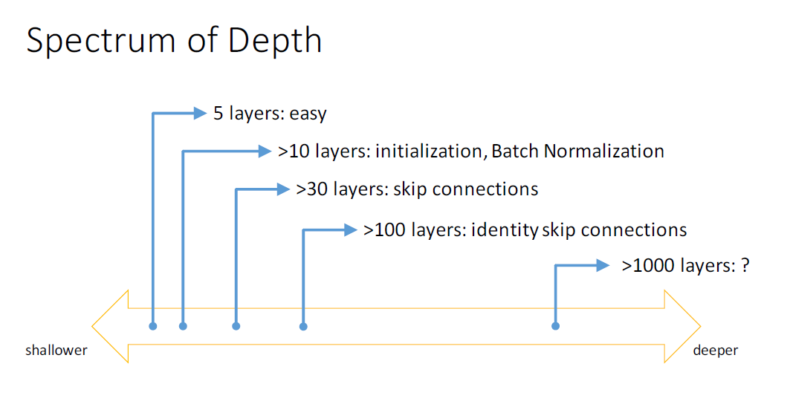
- Residual blocks types:
- Identity block:

- Hint the conv is followed by a batch norm
BNbeforeRELU. Dimensions here are same. - This skip is over 2 layers. The skip connection can jump n connections where n>2
- This drawing represents Keras layers.
- Hint the conv is followed by a batch norm
- The convolutional block:

- The conv can be bottleneck 1 x 1 conv
- Identity block:
Network in Network and 1 X 1 Convolutions
- A 1 x 1 convolution - We also call it Network in Network- is so useful in many CNN models.
- What does a 1 X 1 convolution do? Isn't it just multiplying by a number?
- Lets first consider an example:
- Input:
6x6x1 - Conv:
1x1x1one filter.# The 1 x 1 Conv - Output:
6x6x1
- Input:
- Another example:
- Input:
6x6x32 - Conv:
1x1x325 filters.# The 1 x 1 Conv - Output:
6x6x5
- Input:
- Lets first consider an example:
- The Network in Network is proposed in [Lin et al., 2013. Network in network]
- It has been used in a lot of modern CNN implementations like ResNet and Inception models.
- A 1 x 1 convolution is useful when:
- We want to shrink the number of channels. We also call this feature transformation.
- In the second discussed example above we have shrieked the input from 32 to 5.
- We will later see that by shrinking it can save a lot of computations.
- If we have specified the number of 1 x 1 Conv filters to be the same as the input number of channels then the output will contain the same number of channels. Then the 1 x 1 Conv will act like a non linearity and will learn non linearity operator.
- We want to shrink the number of channels. We also call this feature transformation.
- Replace fully connected layers with 1 x 1 convolutions as Yann LeCun believes they are the same.
-
In Convolutional Nets, there is no such thing as "fully-connected layers". There are only convolution layers with 1x1 convolution kernels and a full connection table. Yann LeCun
-
- [Lin et al., 2013. Network in network]
Inception Network Motivation
- When you design a CNN you have to decide all the layers yourself. Will you pick a 3 x 3 Conv or 5 x 5 Conv or maybe a max pooling layer. You have so many choices.
- What inception tells us is, Why not use all of them at once?
- Inception Module, naive version:

- Hint that max-pool are same here.
- Input to the inception module are 28 x 28 x 192 and the output are 28 x 28 x 256
- We have done all the Convs and pools we might want and will let the NN learn and decide which it want to use most.
- [Szegedy et al. 2014. Going deeper with convolutions]
- The problem of computational cost in Inception model:
- If we have just focused on a 5 x 5 Conv that we have done in the last example.
- There are 32 same filters of 5 x 5, and the input are 28 x 28 x 192.
- Output should be 28 x 28 x 32
- The total number of multiples needed here are:
- Number of outputs * Filter size * Filter size * Input dimensions
- Which equals:
28 * 28 * 32 * 5 * 5 * 192 = 120 Mil - 120 Mil multiply operation still a problem in the modern day computers.
- Using a 1 x 1 convolution we can reduce 120 mil to just 12 mil. Lets see how.
- Using 1 X 1 convolution to reduce computational cost:
- The new architecture are:
- X0 shape is (28, 28, 192)
- We then apply 16 (1 x 1 Convolution)
- That produces X1 of shape (28, 28, 16)
- Hint, we have reduced the dimensions here.
- Then apply 32 (5 x 5 Convolution)
- That produces X2 of shape (28, 28, 32)
- Now lets calculate the number of multiplications:
- For the first Conv:
28 * 28 * 16 * 1 * 1 * 192 = 2.5 Mil - For the second Conv:
28 * 28 * 32 * 5 * 5 * 16 = 10 Mil - So the total number are 12.5 Mil approx. which is so good compared to 120 Mil
- For the first Conv:
- The new architecture are:
- A 1 x 1 Conv here is called Bottleneck
BN. - It turns out that the 1 x 1 Conv won't hurt the performance.
- Inception module, dimensions reduction version:

- Example of inception model in Keras: 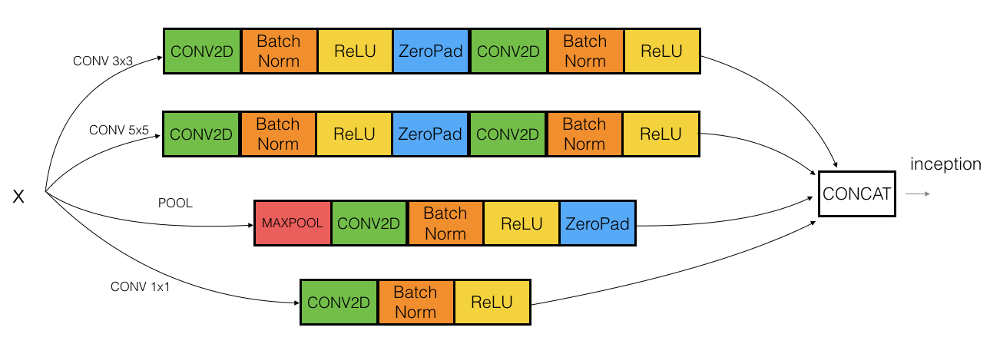
Inception Network (GoogleNet)
- The inception network consist of concatenated blocks of the Inception module.
- The name inception was taken from a meme image which was taken from Inception movie
- Here are the full model:

- Some times a Max-Pool block is used before the inception module to reduce the dimensions of the inputs.
- There are a 3 Sofmax branches at different positions to push the network toward its goal. and helps to ensure that the intermediate features are good enough to the network to learn and it turns out that softmax0 and sofmax1 gives regularization effect.
- Since the development of the Inception module, the authors and the others have built another versions of this network. Like inception v2, v3, and v4. Also there are a network that has used the inception module and the ResNet together.
- [Szegedy et al., 2014, Going Deeper with Convolutions]
Using Open-Source Implementation
- We have learned a lot of NNs and ConvNets architectures.
- It turns out that a lot of these NN are difficult to replicated. because there are some details that may not presented on its papers. There are some other reasons like:
- Learning decay
- Parameter tuning
- A lot of deep learning researchers are opening sourcing their code into Internet on sites like Github.com.
- If you see a research paper and you want to build over it, the first thing you should do is to look for an open source implementation for this paper.
- Some advantage of doing this is that you might download the network implementation along with its parameters/weights. The author might used a multiple GPUs and some weeks to reach this result and its right in front of you after you download it.
Transfer Learning
- It you are using a specific NN architecture that has been trained before, you can use this pretrained parameters/weights instead of random initialization to solve your problem.
- It can help you boost the performance of the NN.
- The pretrained models might have trained of a large datasets like ImageNet, Ms COCO, or pascal and took a lot of time to learn those parameters/weights with optimized hyperparameters. This can save you a lot of time.
- Lets see an example:
- Lets say you have a cat classification problem which contains 3 classes Tigger, Misty and neither.
- You don't have much a lot of data to train a NN on these images.
- Recommends to go online and download a good NN with its weights, remove the softmax activation layer and put your own one and make the network learn only the new layer while other layer weights are fixed/frozen.
- Frameworks have options to make the parameters frozen in some layers using
trainable = 0orfreeze = 0 - One of the tricks that can speed up your training, is to run the pretrained NN without final softmax layer and get an intermediate representation of your images and save them to disk. And then use these representation to a shallow NN network. This can save you the time needed to run an image through all the layers.
- Its like converting your images into vectors.
- Another example:
- What if in the last example you have a lot of pictures for your cats.
- One thing you can do is to freeze few layers from the beginning of the pretrained network and learn the other weights in the network.
- Some other idea is to through away the layers that aren't freeze and put your own layers there.
- Another example:
- If you have enough data, you can fine tune all the layers in your pretrained network but don't random initialize the parameters, leave the learned parameters as it is and learn from there.
Data Augmentation
- If data is increases, your deep NN will perform better. Data augmentation is one of the techniques that deep learning uses to increase the performance of deep NN.
- The majority of computer vision applications needs more data right now.
- Some data augmentation methods that are used for computer vision tasks includes:
- Mirroring.
- Random cropping.
- The issue with this technique is that you might take a wrong crop.
- The solution is to make your crops big enough.
- Rotation.
- Shearing.
- Local warping.
- Color shifting.
- For example, we add to R, G, and B some distortions that will make the image identified as the same for the human but is different for the computer.
- In practice the added value are pulled from some probability distribution and these shifts are some small.
- Makes your algorithm more robust in changing colors in images.
- There are an algorithm which is called PCA color augmentation that decides the shifts needed automatically.
- Implementing distortions during training:
- You can use a different CPU thread to make you a distorted mini batches while you are training your NN.
- Data Augmentation has also some hyperparameters. A good place to start is to find an open source data augmentation implementation and then use it or fine tune these hyperparameters.
State of Computer Vision
- For a specific problem we may have a little data for it or a lots of data.
- Speech recognition problems for example has a big amount of data, while image recognition has a medium amount of data and the object detection has a small amount of data nowadays.
- If your problem has a large amount of data, researchers are tend to use:
- Simpler algorithms.
- Less hand engineering.
- If you don't have that much data people are tend to try more hand engineering for the problem "Hacks". Like choosing a more complex NN architecture.
- Because we haven't that much data in a lot of computer vision problems, It relies a lot on hand engineering.
- We will see in the next chapter that because the object detection has a less data, a more complex NN architectures will be presented.
- Tips for doing well on benchmarks/winning competitions:
- Ensembling.
- Train several networks independently and average their outputs. Merging down some classifiers.
- After you decide the best architecture for your problem, initialize some of that randomly and train them independently.
- This can give you a push by 2%
- But this will slow down your production by the number of the ensembles. Also it takes more memory as it saves all the models in the memory.
- People use this in competitions but few uses this in a real production.
- Multi-crop at test time.
- Run classifier on multiple versions of test versions and average results.
- There is a technique called 10 crops that uses this.
- This can give you a better result in the production.
- Ensembling.
- Use open source code
- Use architectures of networks published in the literature.
- Use open source implementations if possible.
- Use pretrained models and fine-tune on your dataset.
Object Detection
Learn how to apply your knowledge of CNNs to one of the toughest but hottest field of computer vision: Object detection.
Object Localization
-
Object detection is one from the areas that deep learning is doing great in the past two years.
-
What are localization and detection?
- Image Classification:
- Classify an image to a specific class. The whole image represents one class. We don't want to know exactly where are the object. Usually only one object is presented.

- Classification With Localization:
- Given an image we want to learn the class of the image and where are the class location in the image. We need to detect a class and a rectangle of where that object is. Usually only one object is presented.

- Object Detection:
- Given an image we want to detect all the object in the image that belong to a specific classes and give their location. An image can contain more than one object with different classes.

- Semantic Segmentation:
- We want to Label each pixel in the image with a category label. Semantic Segmentation Don't differentiate instances, only care about pixels. It detects no objects just pixels.
- If there are two objects of the same class is intersected, we won't be able to separate them.
- 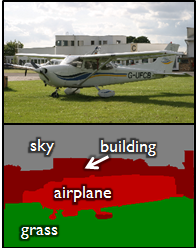
- Instance Segmentation
- This is like the full problem. Rather than we want to predict the bounding box, we want to know which pixel label but also distinguish them.

- Image Classification:
-
To make image classification we use a Conv Net with a Softmax attached to the end of it.
-
To make classification with localization we use a Conv Net with a softmax attached to the end of it and a four numbers
bx,by,bh, andbwto tell you the location of the class in the image. The dataset should contain this four numbers with the class too. -
Defining the target label Y in classification with localization problem:
Y = [ Pc # Probability of an object is presented bx # Bounding box by # Bounding box bh # Bounding box bw # Bounding box c1 # The classes c2 ... ]-
Example (Object is presented):
Y = [ 1 # Object is presented 0 0 100 100 0 1 0 ] -
Example (When object isn't presented):
Y = [ 0 # Object isn't presented ? # ? means we dont care with other values ? ? ? ? ? ? ]
-
-
The loss function for the Y we have created (Example of the square error):
L(y',y) = { (y1'-y1)^2 + (y2'-y2)^2 + ... if y1 = 1 (y1'-y1)^2 if y1 = 0 }- In practice we use logistic regression for
pc, log likely hood loss for classes, and squared error for the bounding box.
- In practice we use logistic regression for
Landmark Detection
-
In some of the computer vision problems you will need to output some points. That is called landmark detection.
-
For example, if you are working in a face recognition problem you might want some points on the face like corners of the eyes, corners of the mouth, and corners of the nose and so on. This can help in a lot of application like detecting the pose of the face.
-
Y shape for the face recognition problem that needs to output 64 landmarks:
Y = [ THereIsAface # Probability of face is presented 0 or 1 l1x, l1y, ...., l64x, l64y ] -
Another application is when you need to get the skeleton of the person using different landmarks/points in the person which helps in some applications.
-
Hint, in your labeled data, if
l1x,l1yis the left corner of left eye, all otherl1x,l1yof the other examples has to be the same.
Object Detection
- We will use a Conv net to solve the object detection problem using a technique called the sliding windows detection algorithm.
- For example lets say we are working on Car object detection.
- The first thing, we will a Conv net on a cropped car objects and non car images.

- After we finish training of this Conv net we will then use it with the sliding windows technique.
- Sliding windows detection algorithm:
- Decide a rectangle size.
- Split your image into rectangles of the size you picked. Each region should be covered. You can use some strides.
- For each rectangle feed the image into the Conv net and decide if its a car or not.
- Pick larger/smaller rectangles and repeat the process from 2 to 3.
- Store the rectangles that contains the cars.
- If two or more rectangles intersects choose the rectangle with the best accuracy.
- Disadvantage of sliding window is the computation time.
- In the era of machine learning before deep learning, people used a hand crafted linear classifiers that classifies the object and then use the sliding window technique. The linear classier make it a cheap computation. But in the deep learning era that is so computational expensive due to the complexity of the deep learning model.
- To solve this problem, we can implement the sliding windows with a Convolutional approach.
- One other idea is to compress your deep learning model.
Convolutional Implementation of Sliding Windows
- Turning FC layer into convolutional layers (predict image class from four classes):

- As you can see in the above image, we turned the FC layer into a Conv layer using a convolution with the width and height of the filter is the same as the with and height of the input.
- Convolution implementation of sliding windows:
- First lets consider that the Conv net you trained in like this (No FC all is conv layers):

- Say now we have a 16 x 16 x 3 image that we need to apply the sliding windows in. By the normal implementation that have been mentioned in the section before this, we could run this Conv net four times each rectangle size will be 16 x 16.
- The convolution implementation will be as follows:

- Simply we have feed the image into the same Conv net we have trained.
- The left cell of the result "The blue one" will represent the the first sliding window of the normal implementation. The other cells will represent the others.
- Its more efficient because it now shares the computations of the four times needed.
- Another example would be:

- This example has a total of 16 sliding windows that shares the computation together.
- [Sermanet et al., 2014, OverFeat: Integrated recognition, localization and detection using convolutional networks]
- First lets consider that the Conv net you trained in like this (No FC all is conv layers):
- The weakness of the algorithm is that the position of the rectangle wont be so accurate. Maybe none of the rectangles is exactly on the object you want to recognize.

- In red the rectangle we want in blue the best car rectangle.
Bounding Box Predictions
- A better algorithm than the one described in the last section is the YOLO algorithm.
- YOLO stands for you only look once and was developed back in 2015.
- Yolo Algorithm:

- Lets say we have an image of 100 X 100
- Place a 3 x 3 grid on the image. For more smother results you should use 19 x 19 for the 100 x 100
- Apply the classification and localization algorithm we discussed in a previous section to each section of the grid.
bxandbywill represent the center point of the object in each grid and will be relative to the box so the range is between 0 and 1 whilebhandbwwill represent the height and width of the object which can be greater than 0.0 but still float point. - Do everything at once with the convolution sliding window. If Y shape is 1 x 8 as we discussed before then the output of the 100 x 100 image should be 3 x 3 x 8 which corresponds to 9 cell results.
- Merging the results using predicted localization mid point.
- We have a problem if we have found more than one object in one grid box.
- One of the best advantages that makes the YOLO algorithm popular is that it has a great speed and a Conv net implementation.
- How is YOLO different from other Object detectors? YOLO uses a single CNN network for both classification and localizing the object using bounding boxes.
- In the next sections we will see some ideas that can make the YOLO algorithm better.
Intersection Over Union
- Intersection Over Union is a function used to evaluate the object detection algorithm.
- It computes size of intersection and divide it by the union. More generally, IoU is a measure of the overlap between two bounding boxes.
- For example:

- The red is the labeled output and the purple is the predicted output.
- To compute Intersection Over Union we first compute the union area of the two rectangles which is "the first rectangle + second rectangle" Then compute the intersection area between these two rectangles.
- Finally
IOU = intersection area / Union area
- If
IOU >=0.5then its good. The best answer will be 1. - The higher the IOU the better is the accuracy.
Non-max Suppression
- One of the problems we have addressed in YOLO is that it can detect an object multiple times.
- Non-max Suppression is a way to make sure that YOLO detects the object just once.
- For example:

- Each car has two or more detections with different probabilities. This came from some of the grids that thinks that this is the center point of the object.
- Non-max suppression algorithm:
- Lets assume that we are targeting one class as an output.
- Y shape should be
[Pc, bx, by, bh, hw]Where Pc is the probability if that object occurs. - Discard all boxes with
Pc < 0.6 - While there are any remaining boxes:
- Pick the box with the largest Pc Output that as a prediction.
- Discard any remaining box with
IoU < 0.5with the box output in the previous step.
- If there are multiple classes/object types
cyou want to detect, you should run the Non-max suppressionctimes.
Anchor Boxes
- In YOLO, a grid only detects on object. What if a grid cell wants to detect multiple object?

- Car and person grid is same here.
- In practice this happens rarely.
- The idea of Anchor boxes helps us solving this issue.
- If Y =
[Pc, bx, by, bh, bw, c1, c2, c3]Then to use two anchor boxes like this:- Y =
[Pc, bx, by, bh, bw, c1, c2, c3, Pc, bx, by, bh, bw, c1, c2, c3]We simply have repeated the one anchor Y. - The two anchor boxes you choose should be known as a shape: 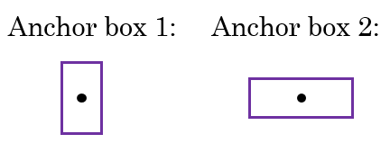
- Y =
- So Previously, each object in training image is assigned to grid cell that contains that object's midpoint.
- With two anchor boxes, Each object in training image is assigned to grid cell that contains object's midpoint and anchor box for the grid cell with highest IoU. You have to check where your object should be based on its rectangle closest to which anchor box.
- Example of data:

- Where the car was near the anchor 2 than anchor 1.
- You may have two or more anchor boxes but you should know their shapes.
- how do you choose the anchor boxes and people used to just choose them by hand you know choose a maybe five or ten anchor ball shapes that spans a variety of shapes that see to cover the types of objects you seem to detect as a much.
- You may also use a k-means algorithm on your dataset to specify that.
- Anchor boxes allows your algorithm to specialize, means in our case to easily detect wider images or taller ones.
YOLO Algorithm
-
YOLO is a state-of-the-art object detection model that is fast and accurate
-
Lets sum up and introduce the whole YOLO algorithm given an example.
-
Suppose we need to do object detection for our autonomous driver system.It needs to identify three classes:
- Pedestrian (Walks on ground).
- Car.
- Motorcycle.
-
We decided to choose two anchor boxes, a taller one and a wide one.
- Like we said in practice they use five or more anchor boxes hand made or generated using k-means.
-
Our labeled Y shape will be
[Ny, HeightOfGrid, WidthOfGrid, 16]each row is as following:[Pc, bx, by, bh, bw, c1, c2, c3, Pc, bx, by, bh, bw, c1, c2, c3]
-
Your dataset could be an image with a multiple labels and a rectangle for each label, we should go to your dataset and make the shape and values of Y like we agreed.
- An example:

- We first initialize all of them to zeros and ?, then for each label and rectangle choose its closest grid point then the shape to fill it and then the best anchor point based on the IOU. so that the shape of Y for one image should be
[HeightOfGrid, WidthOfGrid,16]
- An example:
-
Train the labeled images on a Conv net. you should receive an output of
[HeightOfGrid, WidthOfGrid,16]for our case. -
To make predictions, run the Conv net on an image and run Non-max suppression algorithm for each class you have in our case there are 3 classes.
- You could get something like that:

- Total number of generated boxes are grid_width * grid_height * no_of_anchors = 3 x 3 x 2
- By removing the low probability predictions you should have:

- Then get the best probability followed by the IOU filtering: 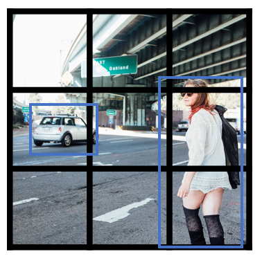
- You could get something like that:
-
YOLO are not good at detecting smaller object.
-
YOLO9000 Better, faster, stronger
-
Summary:
________________________________________________________________________________________ Layer (type) Output Shape Param # Connected to ======================================================================================== input_1 (InputLayer) (None, 608, 608, 3) 0 ________________________________________________________________________________________ conv2d_1 (Conv2D) (None, 608, 608, 32) 864 input_1[0][0] ________________________________________________________________________________________ batch_normalization_1 (BatchNorm (None, 608, 608, 32) 128 conv2d_1[0][0] ________________________________________________________________________________________ leaky_re_lu_1 (LeakyReLU) (None, 608, 608, 32) 0 batch_normalization_1[0][0] ________________________________________________________________________________________ max_pooling2d_1 (MaxPooling2D) (None, 304, 304, 32) 0 leaky_re_lu_1[0][0] ________________________________________________________________________________________ conv2d_2 (Conv2D) (None, 304, 304, 64) 18432 max_pooling2d_1[0][0] ________________________________________________________________________________________ batch_normalization_2 (BatchNorm (None, 304, 304, 64) 256 conv2d_2[0][0] ________________________________________________________________________________________ leaky_re_lu_2 (LeakyReLU) (None, 304, 304, 64) 0 batch_normalization_2[0][0] _______________________________________________________________________________________ max_pooling2d_2 (MaxPooling2D) (None, 152, 152, 64) 0 leaky_re_lu_2[0][0] ________________________________________________________________________________________ conv2d_3 (Conv2D) (None, 152, 152, 128) 73728 max_pooling2d_2[0][0] ________________________________________________________________________________________ batch_normalization_3 (BatchNorm (None, 152, 152, 128) 512 conv2d_3[0][0] ________________________________________________________________________________________ leaky_re_lu_3 (LeakyReLU) (None, 152, 152, 128) 0 batch_normalization_3[0][0] ________________________________________________________________________________________ conv2d_4 (Conv2D) (None, 152, 152, 64) 8192 leaky_re_lu_3[0][0] ________________________________________________________________________________________ batch_normalization_4 (BatchNorm (None, 152, 152, 64) 256 conv2d_4[0][0] ________________________________________________________________________________________ leaky_re_lu_4 (LeakyReLU) (None, 152, 152, 64) 0 batch_normalization_4[0][0] ________________________________________________________________________________________ conv2d_5 (Conv2D) (None, 152, 152, 128) 73728 leaky_re_lu_4[0][0] ________________________________________________________________________________________ batch_normalization_5 (BatchNorm (None, 152, 152, 128) 512 conv2d_5[0][0] ________________________________________________________________________________________ leaky_re_lu_5 (LeakyReLU) (None, 152, 152, 128) 0 batch_normalization_5[0][0] ________________________________________________________________________________________ max_pooling2d_3 (MaxPooling2D) (None, 76, 76, 128) 0 leaky_re_lu_5[0][0] ________________________________________________________________________________________ conv2d_6 (Conv2D) (None, 76, 76, 256) 294912 max_pooling2d_3[0][0] _______________________________________________________________________________________ batch_normalization_6 (BatchNorm (None, 76, 76, 256) 1024 conv2d_6[0][0] ________________________________________________________________________________________ leaky_re_lu_6 (LeakyReLU) (None, 76, 76, 256) 0 batch_normalization_6[0][0] _______________________________________________________________________________________ conv2d_7 (Conv2D) (None, 76, 76, 128) 32768 leaky_re_lu_6[0][0] ________________________________________________________________________________________ batch_normalization_7 (BatchNorm (None, 76, 76, 128) 512 conv2d_7[0][0] _______________________________________________________________________________________ leaky_re_lu_7 (LeakyReLU) (None, 76, 76, 128) 0 batch_normalization_7[0][0] ________________________________________________________________________________________ conv2d_8 (Conv2D) (None, 76, 76, 256) 294912 leaky_re_lu_7[0][0] ________________________________________________________________________________________ batch_normalization_8 (BatchNorm (None, 76, 76, 256) 1024 conv2d_8[0][0] ________________________________________________________________________________________ leaky_re_lu_8 (LeakyReLU) (None, 76, 76, 256) 0 batch_normalization_8[0][0] ________________________________________________________________________________________ max_pooling2d_4 (MaxPooling2D) (None, 38, 38, 256) 0 leaky_re_lu_8[0][0] ________________________________________________________________________________________ conv2d_9 (Conv2D) (None, 38, 38, 512) 1179648 max_pooling2d_4[0][0] ________________________________________________________________________________________ batch_normalization_9 (BatchNorm (None, 38, 38, 512) 2048 conv2d_9[0][0] ________________________________________________________________________________________ leaky_re_lu_9 (LeakyReLU) (None, 38, 38, 512) 0 batch_normalization_9[0][0] ________________________________________________________________________________________ conv2d_10 (Conv2D) (None, 38, 38, 256) 131072 leaky_re_lu_9[0][0] ________________________________________________________________________________________ batch_normalization_10 (BatchNor (None, 38, 38, 256) 1024 conv2d_10[0][0] ________________________________________________________________________________________ leaky_re_lu_10 (LeakyReLU) (None, 38, 38, 256) 0 batch_normalization_10[0][0] ________________________________________________________________________________________ conv2d_11 (Conv2D) (None, 38, 38, 512) 1179648 leaky_re_lu_10[0][0] ________________________________________________________________________________________ batch_normalization_11 (BatchNor (None, 38, 38, 512) 2048 conv2d_11[0][0] ________________________________________________________________________________________ leaky_re_lu_11 (LeakyReLU) (None, 38, 38, 512) 0 batch_normalization_11[0][0] _______________________________________________________________________________________ conv2d_12 (Conv2D) (None, 38, 38, 256) 131072 leaky_re_lu_11[0][0] ________________________________________________________________________________________ batch_normalization_12 (BatchNor (None, 38, 38, 256) 1024 conv2d_12[0][0] ________________________________________________________________________________________ leaky_re_lu_12 (LeakyReLU) (None, 38, 38, 256) 0 batch_normalization_12[0][0] ________________________________________________________________________________________ conv2d_13 (Conv2D) (None, 38, 38, 512) 1179648 leaky_re_lu_12[0][0] ________________________________________________________________________________________ batch_normalization_13 (BatchNor (None, 38, 38, 512) 2048 conv2d_13[0][0] ________________________________________________________________________________________ leaky_re_lu_13 (LeakyReLU) (None, 38, 38, 512) 0 batch_normalization_13[0][0] ________________________________________________________________________________________ max_pooling2d_5 (MaxPooling2D) (None, 19, 19, 512) 0 leaky_re_lu_13[0][0] _______________________________________________________________________________________ conv2d_14 (Conv2D) (None, 19, 19, 1024) 4718592 max_pooling2d_5[0][0] ________________________________________________________________________________________ batch_normalization_14 (BatchNor (None, 19, 19, 1024) 4096 conv2d_14[0][0] ________________________________________________________________________________________ leaky_re_lu_14 (LeakyReLU) (None, 19, 19, 1024) 0 batch_normalization_14[0][0] ________________________________________________________________________________________ conv2d_15 (Conv2D) (None, 19, 19, 512) 524288 leaky_re_lu_14[0][0] ________________________________________________________________________________________ batch_normalization_15 (BatchNor (None, 19, 19, 512) 2048 conv2d_15[0][0] ________________________________________________________________________________________ leaky_re_lu_15 (LeakyReLU) (None, 19, 19, 512) 0 batch_normalization_15[0][0] ________________________________________________________________________________________ conv2d_16 (Conv2D) (None, 19, 19, 1024) 4718592 leaky_re_lu_15[0][0] ________________________________________________________________________________________ batch_normalization_16 (BatchNor (None, 19, 19, 1024) 4096 conv2d_16[0][0] ________________________________________________________________________________________ leaky_re_lu_16 (LeakyReLU) (None, 19, 19, 1024) 0 batch_normalization_16[0][0] ________________________________________________________________________________________ conv2d_17 (Conv2D) (None, 19, 19, 512) 524288 leaky_re_lu_16[0][0] ________________________________________________________________________________________ batch_normalization_17 (BatchNor (None, 19, 19, 512) 2048 conv2d_17[0][0] ________________________________________________________________________________________ leaky_re_lu_17 (LeakyReLU) (None, 19, 19, 512) 0 batch_normalization_17[0][0] _______________________________________________________________________________________ conv2d_18 (Conv2D) (None, 19, 19, 1024) 4718592 leaky_re_lu_17[0][0] ________________________________________________________________________________________ batch_normalization_18 (BatchNor (None, 19, 19, 1024) 4096 conv2d_18[0][0] ________________________________________________________________________________________ leaky_re_lu_18 (LeakyReLU) (None, 19, 19, 1024) 0 batch_normalization_18[0][0] ________________________________________________________________________________________ conv2d_19 (Conv2D) (None, 19, 19, 1024) 9437184 leaky_re_lu_18[0][0] ________________________________________________________________________________________ batch_normalization_19 (BatchNor (None, 19, 19, 1024) 4096 conv2d_19[0][0] ________________________________________________________________________________________ conv2d_21 (Conv2D) (None, 38, 38, 64) 32768 leaky_re_lu_13[0][0] ________________________________________________________________________________________ leaky_re_lu_19 (LeakyReLU) (None, 19, 19, 1024) 0 batch_normalization_19[0][0] ________________________________________________________________________________________ batch_normalization_21 (BatchNor (None, 38, 38, 64) 256 conv2d_21[0][0] ________________________________________________________________________________________ conv2d_20 (Conv2D) (None, 19, 19, 1024) 9437184 leaky_re_lu_19[0][0] ________________________________________________________________________________________ leaky_re_lu_21 (LeakyReLU) (None, 38, 38, 64) 0 batch_normalization_21[0][0] ________________________________________________________________________________________ batch_normalization_20 (BatchNor (None, 19, 19, 1024) 4096 conv2d_20[0][0] ________________________________________________________________________________________ space_to_depth_x2 (Lambda) (None, 19, 19, 256) 0 leaky_re_lu_21[0][0] ________________________________________________________________________________________ leaky_re_lu_20 (LeakyReLU) (None, 19, 19, 1024) 0 batch_normalization_20[0][0] ________________________________________________________________________________________ concatenate_1 (Concatenate) (None, 19, 19, 1280) 0 space_to_depth_x2[0][0] leaky_re_lu_20[0][0] ________________________________________________________________________________________ conv2d_22 (Conv2D) (None, 19, 19, 1024) 11796480 concatenate_1[0][0] ________________________________________________________________________________________ batch_normalization_22 (BatchNor (None, 19, 19, 1024) 4096 conv2d_22[0][0] ________________________________________________________________________________________ leaky_re_lu_22 (LeakyReLU) (None, 19, 19, 1024) 0 batch_normalization_22[0][0] ________________________________________________________________________________________ conv2d_23 (Conv2D) (None, 19, 19, 425) 435625 leaky_re_lu_22[0][0] =============================================================================================== Total params: 50,983,561 Trainable params: 50,962,889 Non-trainable params: 20,672 _______________________________________________________________________________________________
-
-
You can find implementations for YOLO here:
Region Proposals (R-CNN)
- R-CNN is an algorithm that also makes an object detection.
- Yolo tells that its faster:
-
Our model has several advantages over classifier-based systems. It looks at the whole image at test time so its predictions are informed by global context in the image. It also makes predictions with a single network evaluation unlike systems like R-CNN which require thousands for a single image. This makes it extremely fast, more than 1000x faster than R-CNN and 100x faster than Fast R-CNN. See our paper for more details on the full system.
-
- But one of the downsides of YOLO that it process a lot of areas where no objects are present.
- R-CNN stands for regions with Conv Nets.
- R-CNN tries to pick a few windows and run a Conv net (your confident classifier) on top of them.
- The algorithm R-CNN uses to pick windows is called a segmentation algorithm. Outputs something like this:
- If for example the segmentation algorithm produces 2000 blob then we should run our classifier/CNN on top of these blobs.
- There has been a lot of work regarding R-CNN tries to make it faster:
- R-CNN:
- Propose regions. Classify proposed regions one at a time. Output label + bounding box.
- Downside is that its slow.
- [Girshik et. al, 2013. Rich feature hierarchies for accurate object detection and semantic segmentation]
- Fast R-CNN:
- Propose regions. Use convolution implementation of sliding windows to classify all the proposed regions.
- [Girshik, 2015. Fast R-CNN]
- Faster R-CNN:
- Use convolutional network to propose regions.
- [Ren et. al, 2016. Faster R-CNN: Towards real-time object detection with region proposal networks]
- Mask R-CNN:
- R-CNN:
- Most of the implementation of faster R-CNN are still slower than YOLO.
- The idea behind YOLO is better than R-CNN because you are able to do all the things in just one time instead of two times.
- Other algorithms that uses one shot to get the output includes SSD and MultiBox.
- R-FCN is similar to Faster R-CNN but more efficient.

Special Applications: Face Recognition & Neural Style Transfer
Discover how CNNs can be applied to multiple fields, including art generation and face recognition. Implement your own algorithm to generate art and recognize faces!
Face Recognition
What is Face Recognition?
- Face recognition system identifies a persons face. It can work on both images or videos.
- Liveness detection within a video face recognition system prevents the network from identifying a real picture in an image. It can be learned by supervised deep learning using a dataset for live human and in-live human and sequence learning.
- Face verification vs. face recognition:
- Verification:
- Input image, name/ID. (1 : 1)
- Output whether the input image is that of the claimed person.
- "is this the claimed person?"
- Recognition:
- Has a database of K persons
- Get an input image
- Output ID if the image is any of the K persons (or not recognized)
- "who is this person?"
- Verification:
- We can use a face verification system to make a face recognition system. The accuracy of the verification system has to be high (around 99.9% or more) to be use accurately within a recognition system because the recognition system accuracy will be less than the verification system given a K persons.
One Shot Learning
- One of the face recognition challenges is to solve a one shot problem.
- One Shot Learning: A recognition system is able to recognize a person learning from one image.
- Historically deep learning doesn't work well with a small number of data.
- Instead to make this work, we will learn a similarity function:
- d( img1, img2 ) = degree of difference between images.
- We want d result to be low in case of the same faces.
- We use tau T as a threshold for d:
- If d( img1, img2 ) <= T Then the faces are the same.
- Similarity function helps us solving the one shot learning. Also its robust to new inputs.
Siamese Network
- We will implement the similarity function using a type of NNs called Siamease Network in which we can pass multiple inputs to the two or more networks with the same architecture and parameters.
- Siamese network architecture are as the following:
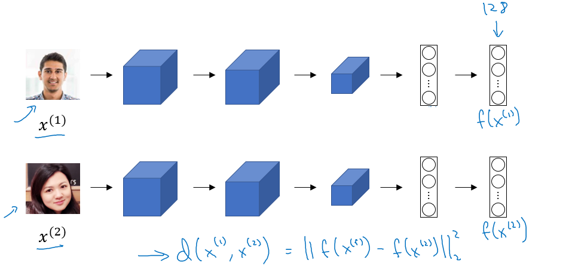
- We make 2 identical conv nets which encodes an input image into a vector. In the above image the vector shape is (128, )
- The loss function will be
d(x1, x2) = || f(x1) - f(x2) ||2 - If
X1,X2are the same person, we want d to be low. If they are different persons, we want d to be high. - [Taigman et. al., 2014. DeepFace closing the gap to human level performance]
Triplet Loss
- Triplet Loss is one of the loss functions we can use to solve the similarity distance in a Siamese network.
- Our learning objective in the triplet loss function is to get the distance between an Anchor image and a positive or a negative image.
- Positive means same person, while negative means different person.
- The triplet name came from that we are comparing an anchor A with a positive P and a negative N image.
- Formally we want:
- Positive distance to be less than negative distance
||f(A) - f(P)||2 <= ||f(A) - f(N)||2- Then
||f(A) - f(P)||2 - ||f(A) - f(N)||2 <= 0- To make sure the NN won't get an output of zeros easily:
||f(A) - f(P)||2 - ||f(A) - f(N)||2 <= -alpha- Alpha is a small number. Sometimes its called the margin.
- Then
||f(A) - f(P)||2 - ||f(A) - f(N)||2 + alpha <= 0
- Final Loss function:
- Given 3 images (A, P, N)
L(A, P, N) = max (||f(A) - f(P)||2 - ||f(A) - f(N)||2 + alpha , 0)J = Sum((A[i], P[i], N[i]) , i)for all triplets of images.
- You need multiple images of the same person in your dataset. Then get some triplets out of your dataset. Dataset should be big enough.
- Choosing the triplets A, P, N:
- During training if A, P, N are chosen randomly (Subjet to A and P are the same and A and N aren't the same) then one of the problems this constrain is easily satisfied
d(A, P) + alpha <= d (A, N)- So the NN wont learn much
- What we want to do is choose triplets that are hard to train on.
- So for all the triplets we want this to be satisfied:
d(A, P) + alpha <= d (A, N)- This can be achieved by for example same poses!
- Find more at the paper.
- During training if A, P, N are chosen randomly (Subjet to A and P are the same and A and N aren't the same) then one of the problems this constrain is easily satisfied
- Details are in this paper [Schroff et al.,2015, FaceNet: A unified embedding for face recognition and clustering]
- Commercial recognition systems are trained on a large datasets like 10/100 million images.
- There are a lot of pretrained models and parameters online for face recognition.
Face Verification and Binary Classification
- Triplet loss is one way to learn the parameters of a conv net for face recognition there's another way to learn these parameters as a straight binary classification problem.
- Learning the similarity function another way:

- The final layer is a sigmoid layer.
Y' = wi * Sigmoid ( f(x(i)) - f(x(j)) ) + bwhere the subtraction is the Manhattan distance between f(x(i)) and f(x(j))- Some other similarities can be Euclidean and Ki square similarity.
- The NN here is Siamese means the top and bottom convs has the same parameters.
- The paper for this work: [Taigman et. al., 2014. DeepFace closing the gap to human level performance]
- A good performance/deployment trick:
- Pre-compute all the images that you are using as a comparison to the vector f(x(j))
- When a new image that needs to be compared, get its vector f(x(i)) then put it with all the pre computed vectors and pass it to the sigmoid function.
- This version works quite as well as the triplet loss function.
- Available implementations for face recognition using deep learning includes:
Neural Style Transfer
What is Neural Style Transfer?
- Neural style transfer is one of the application of Conv nets.
- Neural style transfer takes a content image
Cand a style imageSand generates the content imageGwith the style of style image.
- In order to implement this you need to look at the features extracted by the Conv net at the shallower and deeper layers.
- It uses a previously trained convolutional network like VGG, and builds on top of that. The idea of using a network trained on a different task and applying it to a new task is called transfer learning.
What are deep ConvNets learning?
- Visualizing what a deep network is learning:
- Given this AlexNet like Conv net:

- Pick a unit in layer l. Find the nine image patches that maximize the unit's activation.
- Notice that a hidden unit in layer one will see relatively small portion of NN, so if you plotted it it will match a small image in the shallower layers while it will get larger image in deeper layers.
- Repeat for other units and layers.
- It turns out that layer 1 are learning the low level representations like colors and edges.
- Given this AlexNet like Conv net:
- You will find out that each layer are learning more complex representations. 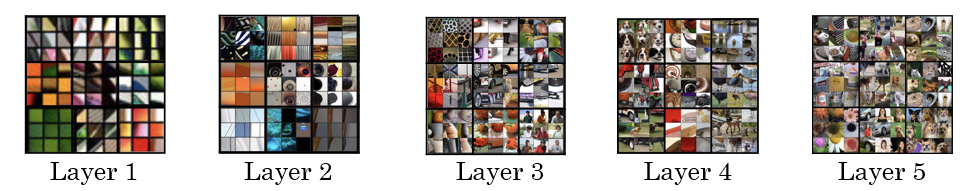
- The first layer was created using the weights of the first layer. Other images are generated using the receptive field in the image that triggered the neuron to be max.
- [Zeiler and Fergus., 2013, Visualizing and understanding convolutional networks]
- A good explanation on how to get receptive field given a layer:

Cost Function
- We will define a cost function for the generated image that measures how good it is.
- Give a content image C, a style image S, and a generated image G:
J(G) = alpha * J(C,G) + beta * J(S,G)J(C, G)measures how similar is the generated image to the Content image.J(S, G)measures how similar is the generated image to the Style image.- alpha and beta are relative weighting to the similarity and these are hyperparameters.
- Find the generated image G:
- Initiate G randomly
- For example G: 100 X 100 X 3
- Use gradient descent to minimize
J(G)G = G - dGWe compute the gradient image and use gradient decent to minimize the cost function.
- Initiate G randomly
- The iterations might be as following image:
- To Generate this:

- You will go through this: 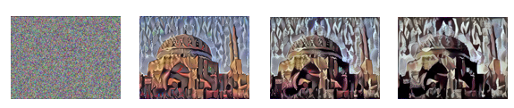
- To Generate this:
Content Cost Function
- In the previous section we showed that we need a cost function for the content image and the style image to measure how similar is them to each other.
- Say you use hidden layer
lto compute content cost.- If we choose
lto be small (like layer 1), we will force the network to get similar output to the original content image. - In practice
lis not to shallow and not too deep but in the middle.
- If we choose
- Use pre-trained ConvNet. (E.g., VGG network)
- Let
a(c)[l]anda(G)[l]be the activation of layerlon the images. - If
a(c)[l]anda(G)[l]are similar then they will have the same contentJ(C, G) at a layer l = 1/2 || a(c)[l] - a(c)[G] ||2
Style Cost Function
- Meaning of the style of an image:
- Say you are using layer l's activation to measure style.
- Define style as correlation between activations across channels.
- That means given an activation like this: 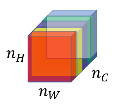
- How correlate is the orange channel with the yellow channel?
- Correlated means if a value appeared in a specific channel a specific value will appear too (Depends on each other).
- Uncorrelated means if a value appeared in a specific channel doesn't mean that another value will appear (Not depend on each other)
- The correlation tells you how a components might occur or not occur together in the same image.
- The correlation of style image channels should appear in the generated image channels.
- Style matrix (Gram matrix):
- Let
a(l)[i, j, k]be the activation at l with(i=H, j=W, k=C) - Also
G(l)(s)is matrix of shapenc(l) x nc(l)- We call this matrix style matrix or Gram matrix.
- In this matrix each cell will tell us how correlated is a channel to another channel.
- To populate the matrix we use these equations to compute style matrix of the style image and the generated image.

- As it appears its the sum of the multiplication of each member in the matrix.
- Let
- To compute gram matrix efficiently:
- Reshape activation from H X W X C to HW X C
- Name the reshaped activation F.
G[l] = F * F.T
- Finally the cost function will be as following:
J(S, G) at layer l = (1/ 2 * H * W * C) || G(l)(s) - G(l)(G) ||
- And if you have used it from some layers
J(S, G) = Sum (lamda[l]*J(S, G)[l], for all layers)
- Steps to be made if you want to create a tensorflow model for neural style transfer:
- Create an Interactive Session.
- Load the content image.
- Load the style image
- Randomly initialize the image to be generated
- Load the VGG16 model
- Build the TensorFlow graph:
- Run the content image through the VGG16 model and compute the content cost
- Run the style image through the VGG16 model and compute the style cost
- Compute the total cost
- Define the optimizer and the learning rate
- Initialize the TensorFlow graph and run it for a large number of iterations, updating the generated image at every step.
1D and 3D Generalizations
- So far we have used the Conv nets for images which are 2D.
- Conv nets can work with 1D and 3D data as well.
- An example of 1D convolution:
- Input shape (14, 1)
- Applying 16 filters with F = 5 , S = 1
- Output shape will be 10 X 16
- Applying 32 filters with F = 5, S = 1
- Output shape will be 6 X 32
- The general equation
(N - F)/S + 1can be applied here but here it gives a vector rather than a 2D matrix. - 1D data comes from a lot of resources such as waves, sounds, heartbeat signals.
- In most of the applications that uses 1D data we use Recurrent Neural Network RNN.
- 3D data also are available in some applications like CT scan: 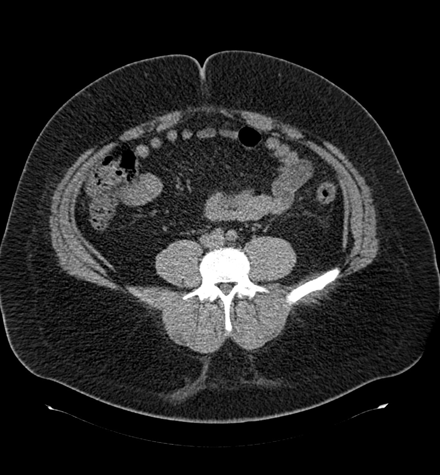
- Example of 3D convolution:
- Input shape (14, 14,14, 1)
- Applying 16 filters with F = 5 , S = 1
- Output shape (10, 10, 10, 16)
- Applying 32 filters with F = 5, S = 1
- Output shape will be (6, 6, 6, 32)
Extras
Keras
- Keras is a high-level neural networks API (programming framework), written in Python and capable of running on top of several lower-level frameworks including TensorFlow, Theano, and CNTK.
- Keras was developed to enable deep learning engineers to build and experiment with different models very quickly.
- Just as TensorFlow is a higher-level framework than Python, Keras is an even higher-level framework and provides additional abstractions.
- Keras will work fine for many common models.
- Layers in Keras:
- Dense (Fully connected layers).
- A linear function followed by a non linear function.
- Convolutional layer.
- Pooling layer.
- Normalisation layer.
- A batch normalization layer.
- Flatten layer
- Flatten a matrix into vector.
- Activation layer
- Different activations include: relu, tanh, sigmoid, and softmax.
- Dense (Fully connected layers).
- To train and test a model in Keras there are four steps:
- Create the model.
- Compile the model by calling
model.compile(optimizer = "...", loss = "...", metrics = ["accuracy"]) - Train the model on train data by calling
model.fit(x = ..., y = ..., epochs = ..., batch_size = ...)- You can add a validation set while training too.
- Test the model on test data by calling
model.evaluate(x = ..., y = ...)
- Summarize of step in Keras: Create->Compile->Fit/Train->Evaluate/Test
Model.summary()gives a lot of useful informations regarding your model including each layers inputs, outputs, and number of parameters at each layer.- To choose the Keras backend you should go to
$HOME/.keras/keras.jsonand change the file to the desired backend like Theano or Tensorflow or whatever backend you want. - After you create the model you can run it in a tensorflow session without compiling, training, and testing capabilities.
- You can save your model with
model_saveand load your model usingmodel_loadThis will save your whole trained model to disk with the trained weights.